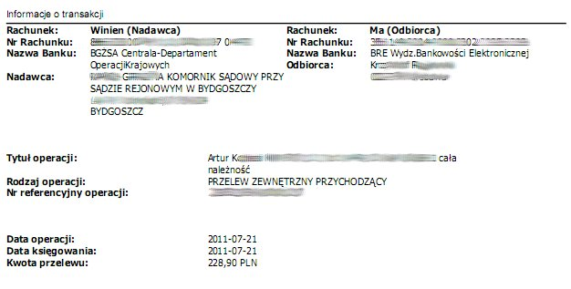

Wstęp
O czym w ogóle jest ta strona?
Ten serwis internetowy pozwoli Ci uzyskać informacje, które będą Ci potrzebne w celu odzyskania swoich pieniędzy w drodze pozwu cywilnego - np. od nieuczciwych sprzedawców na Allegro. Przedstawione tutaj porady są uniwersalne, zatem można je wziąć pod uwagę i dostosować do prawie każdej sytuacji, w której ktoś jest winien nam niewielkie (w obliczu prawa: do 10 tys. zł) pieniądze - może to dotyczyć również należności za najem, wykonaną pracę lub innych należności, które jesteśmy w stanie udowodnić (tzn. przykładowo mamy podpisaną z najemcą umowę, albo zleceniodawca, dla którego wykonujemy pracę na podstawie umowy o dzieło napisał, że zlecenie jest wykonane poprawnie). Istotne zalety przedstawionych porad:
- Nie jest potrzebny prawnik - wszystkie czynności jesteś w stanie wykonać samodzielnie.
- To jest naprawdę proste - jeżeli zrobisz coś źle, odpowiednie instytucje muszą Cię o tym poinformować, abyś mógł dokonać poprawek.
- Koszty są niskie - wydasz jedynie na znaczki pocztowe (a i to może Ci się zwrócić).
- Nie trzeba jeździć do sądu - wszystko załatwia się korespondencyjnie.
- To działa! - poradnik jest napisany na podstawie procedury, którą sam przeszedłem, która działa i zakończyła się zwrotem pieniędzy na moje konto!
- Ten poradnik też jest darmowy - napisałem go w "czynie społecznym" ;) Po prostu sam zostałem oszukany i musiałem walczyć o swoje. Im więcej osób będzie walczyć z oszustami, tym - z czasem - będzie mniejsza ich ilość.
Uwaga! Nie jestem prawnikiem. Ta strona nie jest profesjonalną poradą prawną. Nie posiadam żadnej tajemnej wiedzy ponad to, co można wyczytać w kodeksie cywilnym, stronach sądów i Ministerstwa Sprawiedliwości oraz różnych stronach internetowych - z dodatkiem własnej intuicji. Opisałem tutaj jedynie to, co sam przeszedłem, w celu pomocy innym osobom, które znajdą się w takiej sytuacji, jak ja. Nie wiem, czy to, co tu napisałem jest stuprocentowo zgodne z przepisami, procedurami, prawniczą praktyką i zasadami istniejącymi w "branży" - bo nie mam z nią żadnej styczności. Nie ponoszę odpowiedzialności za sukces lub porażkę Twoich działań, za poniesione przez Ciebie koszty lub inne konsekwencje Twoich czynów. Nie mogę zagwarantować, że sprawa w Twoim przypadku nie pójdzie jakąś inną drogą. Jeżeli chcesz profesjonalnej porady prawnej - udaj się do prawnika (koszt konsultacji: 200zł + VAT za godzinę;).
Parę słów o mnie: czasem robię zakupy na Allegro i nie lubię, gdy mnie ktoś oszukuje :) Potrafię korzystać z Google i nie boję się pisać do urzędów ani kolejek na poczcie, czego rezultatem jest wygrana przeze mnie sprawa. Samemu szukając informacji na interesujący mnie temat doszedłem do wniosku, że nie ma miejsca, gdzie w sposób prosty, darmowy, krok po kroku jest opisana cała procedura. Jeżeli zapragniesz się ze mną skontaktować, możesz pisać na adres autor at pozew-cywilny kropka pl - ale zaznaczam, że nie udzielam porad ani wskazówek, więc pisz jedynie, jeżeli chciałbyś zgłosić błąd albo postawić mi piwo :)
Layout został wykonany przez STUDIO7DESIGNS i udostępniony na licencji Creative Commons 3.0.
Opis sytuacji
Jak wyglądała moja sprawa i czemu zdecydowałem się na pójście do sądu.
A więc od czego się zaczęło? Pewnego dnia postanowiłem kupić żonie w prezencie portfel. Niestety okazało się, że taki, który jej się podobał jest już niedostępny ani w sklepach internetowych, ani stacjonarnych producenta. Pozostało Allegro. Po krótkich poszukiwaniach znalazłem wymarzony przez żonę portfel wystawiony na aukcję przez Artura K. z Bydgoszczy. Nie był to mój pierwszy zakup na Allegro, więc procedura przebiegła sprawnie: "Kup teraz" za 199zł (przesyłka gratis), kontakt ze sprzedającym i przelew.
Dostawa przebiegła szybko, niestety po otwarciu pudełka nastąpiło rozczarowanie. Aby się zbytnio nie rozpisywać napiszę tylko, że portfel był uszkodzony. Poprosiłem sprzedawcę o wymianę portfela na inny lub zwrot pieniędzy - bezskutecznie. Tutaj zatem zaczyna się właściwa historia.
Lista kroków
Co trzeba zrobić, aby odzyskać swoje pieniądze, od początku do końca.
Jeżeli zawiodły próby "pokojowego" rozwiązania problemu, trzeba przejść do konkretnych, twardych działań. Opisuję tutaj, jak to zadziałało w moim przypadku. Można zastosować jakieś odstępstwa czy zmiany, wedle własnego pomysłu. Działałem opierając się na intuicji, wyszukanych przez Google poradach oraz kodeksie cywilnym.
Oto mój plan działań. Początkiem jest moment, w którym stwierdziłem, że sprawa zaczyna "śmierdzieć", czyli, że będą problemy z tym sprzedawcą. Oczywiście przed tym momentem można dowolnie długo spróbować załatwić sprawę polubownie, powołując się na odpowiednie przepisy i sygnalizując determinację do wkroczenia na drogę sądową.
- Zebranie dotychczasowych dowodów, czyli, m.in: kopia strony z aukcją i zdjęć na niej udostępnionych; kopia korespondencji ze sprzedającym; zdjęcia samego produktu, z uwzględnieniem jego wad (uwaga! zdjęcia muszą być w takiej jakości i oświetleniu, żeby dało się je wydrukować).
- Odesłanie (za potwierdzeniem odbioru) wadliwego przedmiotu, wraz z "Wezwaniem przedsądowym", w którym zreferowana jest sprawa. W wezwaniu należy powołać się na odpowiednie przepisy kodeksu cywilnego oraz zażądać zwrotu gotówki.
- Złożenie pozwu cywilnego, z zaznaczeniem wniosku o przeprowadzenie postępowania w trybie uproszczonym, upominawczym.
- Oczekiwanie na nakaz zapłaty wydany przez Sąd. Następnie złożenie wniosku o potwierdzenie nadania klauzuli wykonalności nakazu zapłaty.
- Przesłanie nakazu zapłaty komornikowi, wraz z wnioskiem o egzekucję.
- Sprawdzenie stanu konta :)
Poszczególne punkty opisane są poniżej.
Przed pozwem
Co zrobić, zanim pójdziemy do sądu?
Przede wszystkim wyjaśnienie - nie jestem święcie przekonany, że akurat to należy zrobić. Bazowałem na swoim wyczuciu, przepisach oraz radach innych.
A zatem, przede wszystkim, należy zakomunikować sprzedawcy, że jest się niezadowolonym z wykonanej usługi, sprzedanego przedmiotu, itd. Zakładam, że już to zrobiłeś, a sprzedawca jest impregnowany na wszelkie argumenty. Nie pozostaje zatem nic innego, jak sprawić, aby sprawa stała się oficjalna. Ja zacząłem od zidentyfikowania przepisów, które mają zastosowanie w tym przypadku. Nie będę tutaj ich przytaczał, podam jedynie artykuły. Całośc kodeksu cywilnego można ściągnąć z serwisu www Sejmu RP, klikając tutaj. Są to (zaznaczam, że przytaczam je jedynie w skrócie, proszę sprawdzić sobie ich pełną treść):
- art. 556 - sprzedawca jest odpowiedzialny względem kupującego za sprzedaną rzecz, jeżeli ma ona wadę
- art. 557 - sprzedawca nie jest odpowiedzialny, jeżeli powiadomił kupującego o wadzie
- art. 558 - sprzedawca może wyłączyć swoją odpowiedzialność, jednakże nie jest to skuteczne, jeżeli "sprzedawca zataił podstępnie wadę przed kupującym" - bardzo mi się podoba to sformułowanie ;)
- art. 560 - jeżeli rzecz ma wady, kupujący może odstąpić od umowy lub żądać obniżenia ceny. Nie można odstąpić od umowy, jeżeli sprzedawca niezwłocznie naprawi rzecz lub wymieni na taką pozbawioną wad. Dodatkowo, sprzedawca musi pokryć koszty związane z operacją.
Bazując na powyższych elementach napisałem pismo jak poniżej. Dołączyłem do niego wadliwy portfel i całość wysłałem za potwierdzeniem odbioru do sprzedawcy. Czemu odesłałem portfel, bez otrzymania zwrotu kwoty? Stwierdziłem, że taki badziew i tak jest mi niepotrzebny, a odsyłając go sprzedawcy staję na pozycji takiej, że jestem "czysty" - nic nie jestem mu winien, nic nie muszę zwrócić, po prostu sprzedawca jest mi winien pieniądze. To trochę gra "va banque" - musisz się zastanowić, czy jesteś na to gotów. Jest tutaj istotna sprawa - doczytałem, że postępowanie upominawcze, które będziemy chcieli zastosować w pozwie, można zastosować jedynie w momencie, gdy "zaspokojenie roszczenia nie zależy od spełnienia świadczenia wzajemnego" - czyli właśnie (według mojego rozumienia) nic nie musimy zwrócić sprzedawcy. Oto pismo:
Warszawa, 24 sierpnia 2010
(adres mój), (adres sprzedawcy)
WEZWANIE PRZEDSĄDOWE
W nawiązaniu do zakupu typu "Kup teraz" na aukcji numer (...) w serwisie internetowym allegro.pl odsyłam panu portfel damski marki "Batycki", który otrzymałem od pana pocztą
w dniu 20 sierpnia br., po uprzednim dokonaniu przelewu na pańskie konto kwoty 199 zł.
Portfel posiada istotne wady, w postaci widocznych wyraźnych zielonych kropek na wewnętrznej, jasnej powierzchni skóry.
Na podstawie art. 556. kodeksu cywilnego (k.c.) jest pan, jako sprzedawca, odpowiedzialny względem mnie, jako kupującego, za wady zmniejszające wartość sprzedanej rzeczy.
Nie zaszła sytuacja, o której mowa w art. 557. k. c., czyli nie zostałem poinformowany w treści pańskiego ogłoszenia (w tym za pośrednictwem towarzyszących mu zdjęć)
o istniejących wadach. Treść ogłoszenia w serwisie aukcyjnym nie zawierała informacji o wadach, nie były one również widoczne na zdjęciu.
Nie zaszła również sytuacja, o której mowa w art. 558. k.c., mianowicie nie wyłączył pan swojej odpowiedzialności za wady w treści ogłoszenia.
W związku z powyższym, na podstawie art. 560. par. 1 kodeksu cywilnego, niniejszym odstępuję od umowy kupna wspomnianego portfela. Nie skorzystał pan z możliwości
niezwłocznej wymiany rzeczy wadliwej na rzecz wolną od wad (art. 560. par. 1 k.c.), co wnioskuję po pańskich wiadomościach e-mail z dnia 22 sierpnia br.
Do niniejszego pisma załączam wspomniany porfel oraz wzywam pana do zwrotu kwoty 199 złotych, które zapłaciłem za porfel,
oraz 6,05 złotych, jako pokrycie kosztów niniejszej przesyłki. Zwrot powinien nastąpić w terminie nie dłuższym niż 7 dni
od otrzymania przez pana niniejszego pisma, na konto numer (...) w banku mBank (dane do przelewu jak w nagłówku pisma).
W przypadku nieotrzymania przeze mnie wspomnianej powyżej kwoty w określonym terminie, zostanie złożony pozew cywilny.
W pozwie zostanie zawarte żądanie zapłacenia przez pana wspomnianej powyżej kwoty, wraz z odsetkami,
kosztami sądowymi, kosztami zawiadomień, kosztami wszelkich koniecznych opinii biegłych, itd
Jak można się domyślać, sprzedawca nie zareagował na to pismo. Ale, na swoje nieszczęście, odebrał je, kwitując odbiór swoim podpisem - zatem potwierdzenie nadania oraz potwierdzenie odbioru przypinamy do kopii pisma i wkładamy do teczki z napisem "Dowody rzeczowe" :) Czas, aby zaangażować Prawo.
Pozew cywilny
W jaki sposób złożyć pozew.
Uwaga! Najpierw słowniczek:
- Powód - to Ty, czyli osoba pozywająca.
- Pozwany - to nieuczciwy sprzedawca.
Sprzedawca nie odpowiedział w terminie na warunki postawione w wysłanym do niego piśmie, ale je odebrał. Zatem nie ma co liczyć na polubowne załatwienie sprawy, nadszedł czas na pozew cywilny. Przede wszystkim należy zlokalizować odpowiedni wydział cywilny sądu rejonowego - odpowiadający miejscu zamieszkania sprzedawcy. Jego adres otrzymamy z Allegro w czasie zrealizowania zakupu. Pomocne jest Google - należy wpisać "sąd rejonowy" nazwa miejscowości - w przypadku dużych miejscowości znalezienie odpowiedniego sądu nie stanowi problemu - w przypadku mniejszych trzeba sprawdzić, jaki okoliczny sąd rejonowy obejmuje swoim zasięgiem daną miejscowość. Po odnalezieniu odpowiedniego sądu należy znaleźć dane kontaktowe odpowiedniego wydziału cywilnego - przeważnie wszystkie te informacje są do uzyskania na stronie www odpowiedniego sądu.
W pozwie będziemy wnioskować o przeprowadzenie postępowania w trybie uproszczonym, upominawczym, co niezwykle ułatwia nam sprawę:
- Postępowanie uproszczone stosuje się m.in. do spraw, w których wartość przedmiotu sporu nie przekracza 10 tys. zł w sprawach o roszczenia wynikające z rękojmi, gwarancji jakości lub niezgodności towaru konsumpcyjnego z umową sprzedaży konsumenckiej - jeżeli wartość przedmiotu umowy nie przekracza kwoty 10 tys. zł (za Wikipedią). Zaletą tego postępowania jest to, że pozew jest tani (30zł) składany na określonym z góry formularzu, nie trzeba fatygować się do sądu. Wadą jest to, że trzeba wraz z pozwem złożyć wszelkie dokumenty (nie można potem "dokładać" dowodów), a dowody te muszą być nie budzące wątpliwości. Więcej informacji w Wikipedii.
- Postępowanie upominawcze polega na tym, że sąd rozpoznaje nasz pozew bez wysłuchania pozwanego, a okoliczności przytoczone przez nas nie muszą być udowodnione, lecz jedynie prawdopodobne. W następnej kolejności sąd wydaje nakaz zapłaty, który jest wysyłany - wraz z naszym pozwem - do pozwanego. Pozwany ma określony czas (14 dni) na wniesienie sprzeciwu. Jeżeli tego nie zrobi - klamka zapadła, musi zapłacić :) Jeżeli nie - rozpoczyna się zwyczajne postępowanie z wyznaczeniem rozprawy. Powinniśmy jednak trzymać kciuki za to, żeby do tego nie doszło. W moim przypadku - pozwany nie wniósł sprzeciwu. Więcej informacji w Wikipedii.
- pkt 3.1.1. - dane powoda, czyli Twoje
- pkt 4.1. - dane pozwanego, czyli sprzedawcy
- pkt 6.1 - skreślić, chyba, że pozywamy kilka osób na raz
- dalsze punkty w 6.1: odsetki - ustawowe, natomiast w tabelce poniżej wyszczególnić nasze należności: należność główną, wraz z wpisaniem do kolumny "okres, za który należą się odsetki" - w polu "od" datę, liczoną od momentu odebrania przez powoda naszego wezwania przedsądowego z dodanym ustalonym przez nas terminem zwrotu należności (zazwyczaj 7 lub 14 dni); w polu "do" wpisać "do dnia zapłaty". Można również tutaj uwzględnić inne koszty, które ponieśliśmy - ja o tym zapomniałem, więc pozwany nie zwróci mi za znaczki :(
- pkt 6.2. - skreślić
- pkt 7. - wpisać "Wnoszę o zasądzenie od pozwanego zwrotu kosztów procesu wg norm przepisanych."
- pkt 9. - zostawiam na potem :)
- pkt 10. - wnioski dowodowe - tutaj należy wpisać wszystkie dowody, które zgromadziliśmy. W kolumnie lewej należy podać jaki to jest dowód (ja je dodatkowo ponumerowałem) natomiast w prawej, jaki fakt jest tym
dowodem stwierdzony. Przykładowo: "dowód nr 1 - wydruk ogłoszenia o sprzedaży przedmiotu sporu, umieszczony przez pozwanego w serwisie www.allegro.pl" a fakt podlegający stwierdzeniu to "ogłoszenie przez pozwanego chęci
sprzedaży przedmiotu". Oto lista moich dowodów:
- wydruk z aukcji
- zdjęcie będące załącznikiem do aukcji (pokazuje, że towar był ogłaszany jako bez wad)
- potwierdzenie przelewu
- fotografie portfela, który otrzymałem (z zaznaczeniem jego wad)
- wydruk korespondencji mailowej, z zaznaczeniem markerem najistotniejszych elementów
- wezwanie przedsądowe (kopia)
- dowód nadania oraz potwierdzenie odbioru przez pozwanego w/w wezwania (kopie)
- portfel będący przedmiotem sporu (z adnotacją: "aktualnie znajduje się w posiadaniu pozwanego")
- pkt 12. - spis wszystkich, zebranych do kupy dokumentów, które wysyłamy Sądowi
W dniu 17 sierpnia 2010 powód zawarł z pozwanym umowę kupna skórzanego portfela marki „Batycki”, za kwotę 199,00 zł (słownie: sto dziewięćdziesiąt dziewięć złotych).
Umowa została zawarta za pośrednictwem serwisu internetowego „Allegro”, mieszczącego się pod adresem internetowym www.allegro.pl, obsługiwanego przez spółkę QXL Poland Sp. z o.o.
W serwisie tym pozwany, posługując się nazwą użytkownika (...), umieścił ogłoszenie (numer (...)) dotyczące sprzedaży w/w portfela (dowód nr 1),
określające właściwości portfela, w tym, że jest nowy, oraz umieścił zdjęcia, w tym zdjęcie przedstawiające wnętrze portela (dowód nr 2).
Pozwany ustalił kwotę sprzedaży w wysokości 199,00 zł, beż możliwości negocjacji/aukcji (opcja „Kup teraz”), z kosztem przesyłki wynoszącym 0 zł (darmowa przesyłka).
Powód dokonał zawarcia umowy, zgodnie z regulaminem serwisu „Allegro”, poprzez skorzystanie z opcji „Kup teraz”, posługując się nazwą użytkownika (...).
Następnie, w dniu 19 sierpnia 2010 powód dokonał przelewu na konto wskazane przez pozwanego kwoty 199,00 zł (dowód nr 3).
Powód otrzymał pocztą zakupiony portfel w dniu 20 sierpnia 2010. W tym samym dniu powód stwierdził, że portfel posiada uszkodzenia, w postaci wielu widocznych
wyraźnie na wewnętrznej stronie portfela (jasna skóra) odbarwień koloru zielonego. Odbarwienia te są przedstawione na zdjęciach oznaczonych jako dowód nr 4 a-j.
Uszkodzenia te nie zostały opisane lub w żaden inny sposób zasygnalizowane przez pozwanego w ogłoszeniu dotyczącym sprzedaży portfela.
Uszkodzenia te w sposób znaczący obniżają wartość przedmiotu sporu. W opinii powoda, pozwany przedstawił w swoim ogłoszeniu zdjęcie innego
portfela (wspominany powyżej dowód nr 2).
Dowód nr 5 to zapis korespondencji e-mailowej pomiędzy powodem a pozwanym, od momentu zawarcia umowy do momentu ostatecznego
odmówienia przez pozwanego wymiany towaru na pozbawiony wad lub zwrotu gotówki (wiadomości uszeregowane w kolejności achronologicznej, najnowsza na górze,
najstarsza na dole; pozwany posługiwał się adresem e-mail (...) natomiast powód – adresem (...), co jest widoczne w nagłówkach poszczególnych odpowiedzi).
W przebiegu korespondencji, powód w dniu 21 sierpnia 2010 zgłosił pozwanemu wadę portfela oraz żądanie wymiany towaru, a później żądanie zwrotu pieniędzy.
Następnie pozwany stwierdził, że „kropki nie są widoczne nawet na zdjęciach, więc nie jest to towar uszkodzony”, „niestety zwrotów nie przyjmuję”,
oraz odmówił zwrotu pieniędzy lub wymiany towaru na pozbawiony wad.
W związku z brakiem możliwości załatwienia sprawy za pomocą korespondencji e-mailowej, powód w dniu 24 sierpnia 2010 wystosował do pozwanego pismo
(dowód nr 6), w którym, powołując się na art. 560. par. 1 k.c. powód odstąpił od umowy, żądając zwrotu zapłaconej kwoty 199,00 złotych (oraz kosztów wysylki
pisma, tzn. 6,05 zł) na wskazany rachunek bankowy w terminie 7 dni od momentu otrzymania pisma. W piśmie tym powód powołał się na:
* art. 557. k.c.: powód nie został poinformowany w treści ogłoszenia (w tekście oraz zdjęciach) o istniejącej wadzie produktu;
* art 558. k.c.: pozwany w treści ogłoszenia nie wyłączył swojej odpowiedzialności za wady.
Przesyłka z pismem zawierała również portfel, będący przedmiotem sporu.
Pozwany drogą pocztową otrzymał wspomniane pismo, wraz z portfelem, będącym przedmiotem sporu, w dniu 30 sierpnia 2010, na co wskazuje pocztowe potwierdzenie
odbioru zawierające własnoręczny podpis pozwanego (dowód nr 7).
Do dnia złożenia pozwu powód nie otrzymał od pozwanego zwrotu wpłaconej kwoty ani żadnej innej korespondencji.
Powołując się na opisane powyżej okoliczności, wniesienie pozwu należy uznać za uzasadnione i konieczne.
Powód wnioskuje o przeprowadzenie postępowania w trybie uproszczonym, upominawczym, oraz przeprowadzenie rozprawy w nieobecności powoda i pozwanego.
I to tyle. Zwracam uwagę na ostatni, pogrubiony akapit, który jest kluczowy i najważniejszy! Teraz wystarczy tylko dokonać opłaty - numer konta można uzyskac na stronie www Sądu Rejonowego. Wysokość opłaty to 30zł, ale nie mogę teraz nigdzie znaleźć informacji na ten temat, więc lepiej zadzwonić do sądu i się dopytać. W przypadku pozytywnego rozpatrzenia pozwu, Sąd zwraca tę opłatę (chociaż mi zwrócili to jakoś "dziwnie", tzn. dostałem przelew na 22,50zł, a 7,50zł musi mi zwrócić pozwany).
Ostatni etap to skompletowanie wszystkich dokumentów (powtórzę jeszcze: pozew na formularzu "P" + ewentualnie dodatkowe dowody na formularzu "WD"; dowody (mogą być kopie); dowód wniesienie opłaty). Następnie należy... wykonać kopię całości - zostanie ona dostarczona delikwentowi, którego pozwaliśmy. Pozostaje jedynie wszystko spiąć, opisać, wsadzić do solidnej koperty (moja przesyłka ważyła dobre pół kilo) i udać się na pocztę.
Następny etap to oczekiwane na "Nakaz zapłaty", który powinien do nas dojść po pewnym czasie, o ile wszystkie dokumenty się zgadzają. Jeżeli nie - nie martw się - sąd powiadomi Cię, co jest nie tak i co trzeba poprawić. Ja na nakaz zapłaty czekałem około miesiąca. W dokumencie tym jest napisane, że pan Artur K. z Bydgoszczy musi zapłacić mi określoną kwotę. Jeżeli się nie zgadza - ma dwa tygodnie na złożenie sprzeciwu.
Egzekucja długu
Czyli kiedy w końcu ujrzę swoje pieniądze?
W moim przypadku sprzeciw nie został złożony, zatem nie pozostało mi nic innego, jak wyegzekwować dług. Aby to uczynić, potrzebny jest nakaz zapłaty z tzw. "klauzulą wykonalności", nadawaną przez sąd. Niektóre sądy wysyłają taki dokument z urzędu, niektóre nie, zatem najlepiej jest wysłać do sądu pismo o treści:
Warszawa, 19 stycznia 2011
(moje dane) (dane sądu)
Sygn. akt: (tutaj sygnatura akt, którą znajdziemy na nakazie zapłaty)
Zwracam się z prośbą o przesłanie mi potwierdzenia nadania klauzuli wykonalności nakazu zapłaty w postępowaniu upominawczym z dnia 12 października 2010.
W odpowiedzi na ten wniosek otrzymamy pocztą kopię nakazu zapłaty, ale z dodatkową adnotacją o nadaniu klauzuli wykonalności, wszystkimi wymaganymi pieczątkami, itd. Z tego, co się zorientowałem, dokument ten jest o tyle istotny, że nie możemy dostać jego kopii - musi występować w jednym egzemplarzu - zatem nie można go zgubić czy narazić na stratę (np. wysyłając go listem zwykłym). Ten dokument pozwoli nam zgłosić się do komornika w celu odzyskania należności. Jeżeli chcemy trochę dopiec naszemu dłużnikowi, możemy również zgłosić go do Krajowego Rejestru Długów - co utrudni mu branie kredytów, podpisywanie umów dotyczących kablówki, komórki, itd. Niestety, dopisanie do takiego rejestru kosztuje 89zł, zatem musimy się zastanowić, czy gra jest warta świeczki.
Ja, z powodu tego, że mój dług jest niski, zdecydowałem się na usługi komornika. Znalezienie odpowiedniego jest łatwe - wystarczy w Google wpisać "komornik" i nazwę miejscowości. Możemy wybrać dowolnego komornika obsługującego dany "rewir". Aby zlecić sprawę komornikowi, należy wypełnić formularz, który z reguły jest dostępny na jego stronie internetowej. W formularzu tym należy podać dane swoje, powoda, napisać, jaka jest kwota należności i skąd ma być ściągnięta (tutaj sensownym wyborem wydaje się konto bankowe oraz ewentualnie wynagrodzenie za pracę). Niestety, formularz ten wymaga podania kilku szczegółowych danych, do których niekoniecznie mamy dostęp. O ile jesteśmy w stanie podać numer konta i adres powoda - mamy je z aukcji Allegro - o tyle trudniej podać np. datę i miejsce urodzenia albo miejsce pracy. Te dane jednak można znaleźć w internecie - przykładowo datę urodzin można wywnioskować z dat wpisów z życzeniami na Naszej Klasie a miejsce zatrudnienia - z profilu na GoldenLine czy Facebooku. Przetestowałem też opcje polegające na wyszukaniu w Google imienia i nazwiska, numeru telefonu czy adresu zamieszkania powoda. Do wniosku należy dołączyć oryginał nakazu zapłaty z klauzulą wykonalności i wysłać go listem poleconym do komornika. A następnie trzymać kciuki za powodzenie egzekucji :)
To jest etap, na którym się zatrzymałem w marcu 2011 roku. Sprawa stanęła na cztery miesiące. Pamiętajcie, że mój oszust był wyjątkowo oporny, większość wymięknie na tym etapie. Jeżeli nie - można im trochę w tym pomóc - tutaj granice stanowi tylko wyobraźnia i przepisy karne dotyczące stalkingu ;) Można wysyłać smsy, dzwonić, oczywiście nie tylko do pozwanego, ale również do jego miejsca zatrudnienia, itd. Jedyna trudność, jakiej się spodziewam, to ewentualna odpowiedź od komornika, że dane, które podałem są niekompletne i nie da się namierzyć delikwenta - może np. się okazać, że pozwaliśmy Jana Kowalskiego a takich jest tysiąc w całym mieście :) To nie zostawia nas oczywiście na lodzie - można uzyskać dane dłużnika z baz danych obsługiwanych przez MSWiA - tutaj więcej informacji. Trzeba jedynie wykazać, że mamy w tym prawny interes - akurat prawomocny nakaz zapłaty świetnie sprawdza się w tej roli.
Dług odzyskany!
W końcu udało się! :) Po kilku miesiącach oczekiwania, na moim koncie ukazał się taki przelew:
Znaczenia tego obrazka chyba nikomu tłumaczyć nie trzeba - komornik przesłał na moje konto odpowiednią kwotę wraz z odsetkami. A zatem czas na epilog opowieści - po jedenastu miesiącach od nieudanego zakupu na allegro otrzymałem zwrot moich pieniędzy. Czy warto było? Moim zdaniem tak - nie tylko otrzymałem z powrotem 200 zł z odsetkami, ale przy okazji zdobyłem trochę wiedzy na temat tego, w jaki sposób bronić swoich praw przed nieuczciwymi sprzedawcami. A jaki poniosłem koszt? Parę godzin przed komputerem, dwa spacery na pocztę i znaczki. Pamiętajcie - wymiar sprawiedliwości jest dla obywateli, a każdy taki pozew to potencjalnie jeden internetowy oszust mniej.